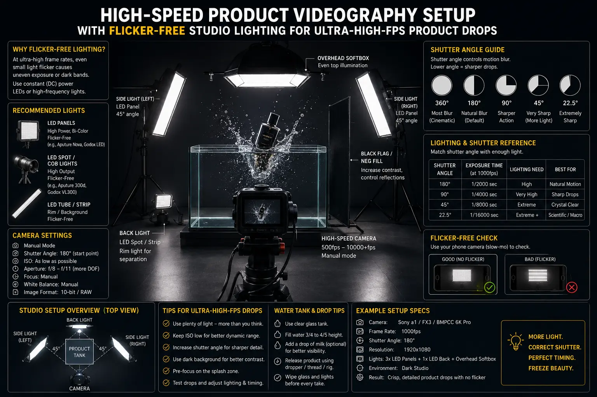
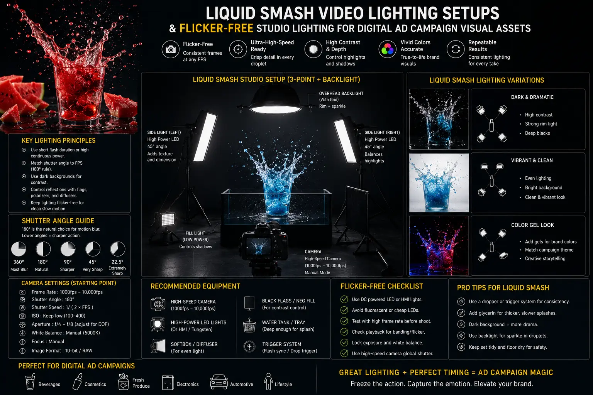

The Physics of High-Speed Visuals: Why Ultra-High FPS Redefines E-Commerce Commercials
In the hyper-competitive world of direct-to-consumer (DTC) advertising, static photography and standard 24-frame-per-second video clips no longer possess the visual velocity needed to command consumer attention. High-growth e-commerce brands rely heavily on Digital Ad Campaign Visual Assets that deliver instant visual gratification. When a serum bottle drops into a crystal-clear water bath, when a carbonated beverage collides with crushed ice, or when a luxury sneaker impacts colored powder, capturing the event in extreme slow motion transforms a fraction of a second into a mesmerizing cinematic narrative.
Achieving these hypnotic visuals demands specialized expertise in High-Speed Product Videography. Recording at 500FPS, 1000FPS, or even 2000FPS reveals physics that the naked human eye can never perceive: surface tension ripples forming concentric geometric crowns, microscopic liquid droplets atomizing in mid-air, and dynamic structural flexing of product materials. However, transitioning from standard cinema frame rates to high-speed recording introduces massive technical hurdles—chief among them being extreme light starvation and severe stroboscopic light flickering.
Executing successful high-frame-rate commercial shoots requires mastering quantum optics, electrical frequency management, and precise exposure trigonometry. Without high-output Flicker-Free Studio Lighting and exact 1000fps shutter angle math, high-speed footage suffers from dark noise, severe motion blur, or ruined takes caused by flickering light waves. In this technical guide, we break down the physics, lighting architecture, and shutter science necessary to engineer high-converting slow-motion product drop commercials.
Photonic Saturation: The Exposure Challenge in High-Speed Camera Shoots
The fundamental obstacle when setting up Lighting for high-speed camera shoots is the drastic reduction in sensor exposure duration per frame. At a standard cinema frame rate of 24FPS using the classic 180-degree shutter rule, the camera shutter remains open for 1/48th of a second per frame. This gives photodiode sensors ample time to collect photons and saturate light wells without requiring extreme studio lighting power.
When the camera frame rate is increased to 1000FPS at a 180-degree shutter angle, the exposure duration per frame collapses to just 1/2000th of a second. At 2000FPS, that exposure window shrinks to 1/4000th of a second. Because the sensor receives less than 2.4% of the photons it would collect at 24FPS, the image instantly becomes virtually pitch black if standard lighting setups are used.
To compensate for this extreme exposure deficit without raising the camera's native ISO—which introduces aggressive digital noise and ruins dynamic range—cinematographers must exponentially increase the ambient light intensity in the studio. Achieving proper exposure at 1000FPS typically demands 10,000 to 50,000+ LUX of focused illuminance on the target subject area. Managing this extreme photometric load requires high-efficiency fixtures, precise beam reflectors, and heat mitigation strategies to prevent scorching sensitive product packaging or boiling liquid drop subjects during production.
Deconstructing 1000fps Shutter Angle Math
Controlling motion blur in high-velocity splash and impact shots relies on understanding 1000fps shutter angle math. The shutter angle determines what fraction of each frame period the camera sensor is exposed to incoming light. The universal formula governing exposure time relative to frame rate and shutter angle is:
Exposure Time = 1 / (FPS × (360° / Shutter Angle))
Let us examine how adjusting shutter angles alters exposure performance during 1000FPS high-speed captures:
- 180° Shutter Angle at 1000FPS: Exposure duration equals 1 / (1000 × (360/180)) = 1/2000th of a second. This setting retains a natural motion cadence suitable for moderate fluid movement while preserving maximum light gathering capability.
- 90° Shutter Angle at 1000FPS: Exposure duration equals 1 / (1000 × (360/90)) = 1/4000th of a second. Narrowing the shutter to 90 degrees cuts incoming light in half, but completely freezes micro-droplets of water, syrup, or cosmetic creams, producing crystal-clear liquid geometry without trailing blur.
- 45° Shutter Angle at 1000FPS: Exposure duration equals 1 / (1000 × (360/45)) = 1/8000th of a second. Used for ultra-fast kinetic impacts, such as glass fracturing or high-velocity powder smashes. This requires an additional stop of light (doubling total LUX), but yields pin-sharp clarity across every microsecond of motion.
Choosing the correct shutter angle is a strategic decision balancing available studio illumination against desired motion freeze. When shooting liquid splash commercials for premium skincare or beverage clients, combining a 90-degree or 45-degree shutter angle with ultra-high output lighting yields razor-sharp textures that elevate perceived product quality across all digital ad platforms.
Pinpoint Motion Freezing
Eliminate unsightly motion trails on high-velocity splashes, freezing individual water beads and liquid droplets with sub-millisecond precision.
Flicker-Free Optical Clarity
Deploying specialized high-frequency DC studio fixtures eliminates lighting frequency strobing, ensuring pristine playback on slow-motion footage.
High-Conversion Social Hooks
Ultra-high FPS visual assets command immediate viewer attention in crowded social feeds, driving higher click-through rates for DTC ad campaigns.
Scalable Commercial Production
Systematic shutter math and standardized lighting grids allow production teams to execute multi-product drop shoots efficiently in a single studio day.

The Electrical Science of Eliminating LED Light Flicker Slow Motion
The single most frustrating error in slow-motion video production is unrecorded light flickering. When footage shot at 1000FPS is played back at standard 24FPS, time is slowed down by approximately 41.6 times. Under standard household or low-cost commercial lighting, light output fluctuates in rhythm with the power grid's alternating current (AC) frequency (50Hz or 60Hz). While invisible to human vision, a high-speed camera operating at 1000FPS captures 16 to 20 distinct frame exposures during a single 50Hz AC voltage wave cycle, recording extreme light brightness spikes followed by total dark frames.
Even modern standard LED panels can present severe problems due to Pulse-Width Modulation (PWM). Many consumer and mid-tier video LEDs dim their light output by rapidly switching the diodes on and off at frequencies between 240Hz and 1000Hz. On slow-motion playback, this creates catastrophic horizontal banding or pulsating black bars running down the video frame.
Achieving eliminating LED light flicker slow motion requires strict adherence to specialized electrical and lighting protocols:
- High-Frequency PWM LED Fixtures: High-end cinematic LED heads utilize ultra-high-frequency dimming drivers operating at 20,000Hz (20kHz) up to 100,000Hz (100kHz). At 20kHz+, the light pulses occur so rapidly that thousands of electrical cycles take place per camera frame exposure, resulting in completely smooth, flicker-free optical delivery.
- Pure Direct Current (DC) Power Supplies: Bypassing AC ripple entirely by running high-output studio lights off smoothed DC rectifiers or high-amp cinema battery banks guarantees 100% constant power delivery to LED arrays or tungsten filaments.
- High-Speed Electronic HMI Ballasts: High-Intensity Discharge HMI lights equipped with specialized 1000Hz or 3000Hz high-speed electronic ballasts square-wave drive the arc lamp, maintaining flat light output across high-speed sensor scans.
- Thermal Mass Filament Retention (Tungsten): Heavy 2kW or 5kW tungsten halogen fixtures possess thick tungsten filaments with high thermal inertia. The filament stays white-hot between AC current cycles, providing continuous, flicker-free thermal light output ideal for extreme slow motion.
DTC Beverage & Food Ads
High-output backlighting grids capture liquid splashes, soda fizzes, condensation drops, and falling ingredient impacts with dynamic clarity.
Cosmetics & Skincare Drops
Precision hard key lighting highlights luxury bottle glass, rich cream textures, and liquid serum drop crowns for high-end beauty campaigns.
Footwear & Tech Smash Commercials
High-velocity impact setups reveal powder explosions, water displacement, and flex mechanics of premium athletic gear and tech devices.

Engineering Liquid Smash Video Lighting Setups
Liquids are inherently challenging subjects to photograph because they lack surface opacity; light passes straight through them or bounces off their surfaces in complex specular reflections. Designing high-performing liquid smash video lighting setups for e-commerce ad creative requires multi-layered spatial lighting architecture:
- High-Intensity Translucent Backlighting: Position a high-output, diffused LED panel or parabolic softbox directly behind the liquid splash tank or pour zone. Backlighting illuminates the internal contours of water or fluid droplets, giving them glowing high-contrast edges against darker backgrounds.
- Hard Specular Key Lights with Grid Control: Mount hard directional lights at 45-degree side angles equipped with honeycomb grids and barn doors. This carves sharp specular highlights across the surface ripples of the product container and liquid splash geometry, defining 3D depth and metallic accent lines.
- Negative Fill for Extreme Contrast: Place solid black cutter flags (solid floppies) on the non-lit side of the set to absorb spill light. This prevents flat ambient illumination and enforces deep, rich shadows that give water splashes dramatic sculptural presence.
- Laser & Acoustic Precision Triggers: High-speed cameras at 1000FPS fill onboard RAM buffers in seconds. Incorporating optical laser sensors or acoustic impact triggers initiates camera recording milliseconds before the product impacts the liquid, ensuring zero wasted takes.
- Waterproof Equipment Protection: High-velocity liquid smashes send aerosolized droplets meters across the studio. Encasing high-voltage lights in clear acrylic splatter shields and utilizing waterproof lens housings protects critical production gear during aggressive drop shoots.
High-Frame-Rate Commercial Shoots: Step-by-Step Execution Protocol
Planning and executing high-speed product commercials requires a rigorous studio workflow to guarantee technical precision and maximize output. Below is the battle-tested production protocol applied at The PhD Ads:
Step 1: Pre-Production Calculation & Storyboarding. Determine the exact physics event velocity. Match desired fluid motion freeze with calculated shutter angles using 1000fps shutter angle math to establish required foot-candle illumination levels.
Step 2: Studio Rigging & Lighting Calibration. Rig high-output Flicker-Free Studio Lighting heads. Measure LUX levels at the drop impact zone using a calibrated spot meter to ensure uniform photonic coverage across the entire movement path.
Step 3: Frequency & Banding Verification Test. Record a 3-second test clip of the illuminated backdrop at 1000FPS. Review playback on a high-resolution waveform monitor to verify total absence of micro-flicker or sensor rolling-shutter banding before introducing live products.
Step 4: Mechanical Drop & Trigger Synchronization. Mount the product to an electromagnetic release valve or pneumatic dropper. Calibrate laser trigger delay settings to hit peak splash impact exactly in the center of the camera depth-of-field window.
Step 5: High-Speed Capture & Speed Ramping Post-Production. Record raw high-speed takes. In post-production, apply custom color curves to preserve highlight details in water droplets and execute smooth speed ramping—transitioning seamlessly from 24FPS real-time entry to 1000FPS ultra-slow impact.
Conclusion: Elevate Your Visual Assets with High-Speed Precision
Masterful slow-motion product drops are not happy accidents—they are the direct result of rigorous photonic physics, precise electrical engineering, and exact optical math. By combining high-output Flicker-Free Studio Lighting, precise 1000fps shutter angle math, and engineered liquid smash video lighting setups, brands can transform routine product drops into extraordinary, high-converting Digital Ad Campaign Visual Assets.
At The PhD Ads in Madurai, we specialize in high-end High-Speed Product Videography and specialized Lighting for high-speed camera shoots. Whether you are launching a new luxury cosmetic line, an energy drink, or high-performance athletic gear, our studio infrastructure and optical engineering expertise deliver pristine slow-motion commercial assets that dominate digital platforms.
Key Topics
Ready to Capture Ultra-High-FPS Slow-Motion Product Drops?
At The PhD Ads in Madurai, we create high-impact high-speed commercial videos, liquid splash ad assets, and flicker-free ultra-slow-motion product drops engineered to boost your digital ad conversions.
Email: team@e2o.in